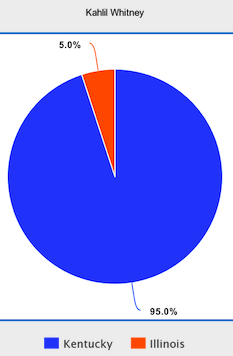

| Information | Recruiting Updates | Achievements |
|---|---|---|
| High School: Roselle Catholic |
|
|
| Position: Small Forward | ||
| Height: 6-6 | ||
| Weight: 190 | ||
| PPG: 19.4 | ||
| RPG: 5.7 | ||
| APG: 1.8 | ||
| SPG: 1.1 |
| Offers | Prediction | Rating |
|---|---|---|
 |
||
| Crystal Ball | Highlight Reel | Social |
|---|---|---|
|  | Tweets by KahlilWhitney |